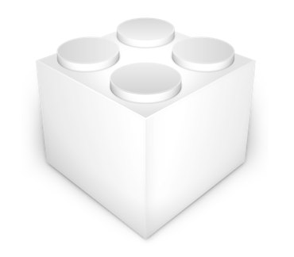
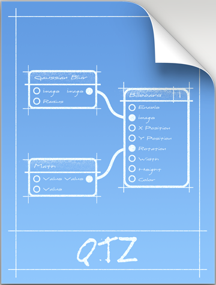

Menu
Home
Temp
About
Work
Contact
Quartz Composer Plug ins
Color Art
version 0.2
iTunes
version 0.5
OpenAL
version 2.0
Leap Motion
version 1.0

Com Line
version 0.1
BBOSC
version 0.7
Serato
version 0.1
QC Xcode
version 0.2
Kinect
version 0.2
Patches
Control Dial
version 0.2
Philips Hue
version 0.1
Example Compositions
Control Dial
version 0.2
Philips Hue
version 0.1
iBeacon
version 1.0
Scroll Wheel
version 1.0
Games
Red Danger
version 0.1

Maze
version 0.1
Air Hockey
version 0.1
version 1.0
11th Feb 2014
Added Game compositions to Github
26th Jan 2014
Added iBeacon Origami composition to Github